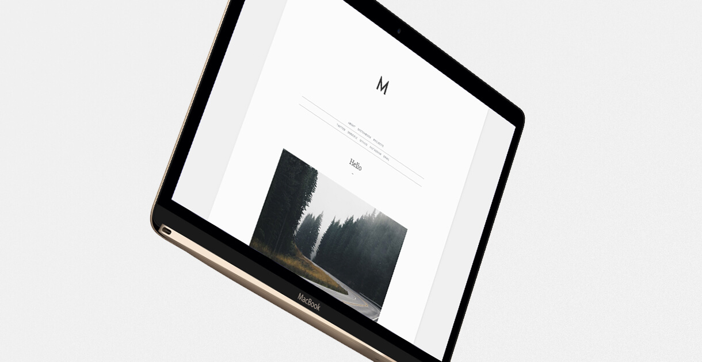
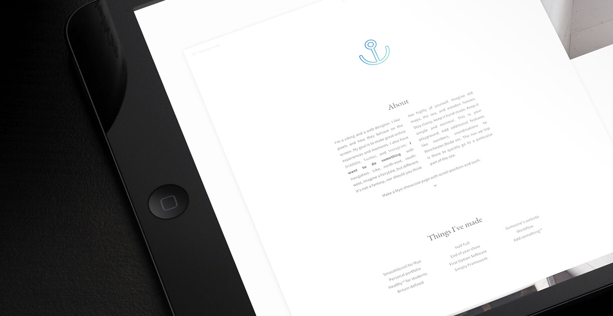
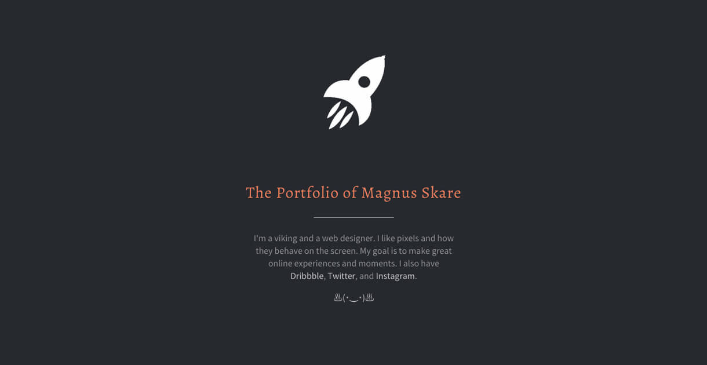
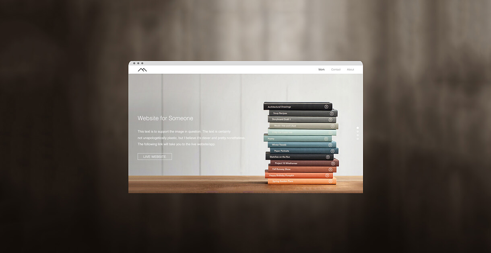

The Making of This Site
16 min read
I think I have a love–hate relationship with designing things for myself. In many ways I’m the worst client you can imagine, because I’m never satisfied. By making things, I’m improving, and by improving, I dislike things that aren’t as good as they could be. It’s a never ending cycle. That’s why this is website version number 13.. or 14, I think I’ve lost track.
The birth of this particular website was sparked by feedback from my last semester. The final outcome of my ideas was apparently good, but they were lacking in depth and justification. In other words, this is a site that focuses heavily on typography, yet leaving space to still show final outcomes in all their pixel glory.
I'm my own worst client. Whatever I make for myself, it's never actually finished.
I don’t want to call this a blog, but I understand that some people probably would. It’s a place where I’m not limited by the canvas of a template and the restraints that comes with content management systems. That might sound like a blog to you, but I think it’s a lot more. It’s a canvas, and I have complete freedom over every page thanks to Jekyll — I’ll get more into that in a bit.
By the way, before we dive into this, every single step of the development process of this website can be found, in detail, on GitHub. Each commit will show what was updated — even down to the individual files and each file’s individual line of code. This particular site design dates back to February 21, and since then there has been 137 commit-worthy changes. These can all be found in detail on GitHub, and can be anything from fixing typographical errors to implementing new components. The project had a hard deadline on February 24 due to the social media campaign launch.
Problem and solution
The problem with portfolios is that unless you stick to a particular style for every project, your portfolio will look disjointed and patched together. As it should, admittedly, but I think having your site represent a blank canvas can help each project stand out more. The focus should be on the content, not on the frame surrounding it. That’s what I did, as you can probably tell by the open space on this site.

It’s easy to be different, but it’s really hard to be better. I feel like every website out there is a set of boxes, horizontally populating the page with a spoonful of content in each box. Add a hero image to that and you’ve got yourself a best-selling Wordpress theme. I wanted to avoid the generic layout, but I had to explore my way to that realisation. My first couple of websites embraced the boxy layout for its simple and effective way of displaying content. Don’t get me wrong, it’s efficient to get content across this way, but it’s hardly interesting any more.
I figured my content would benefit from having its own page — carefully dedicating space to each individual project. This should add a sense of depth to every project. The design went through an organic process, starting with the most important aspect; typography.
Typography
Typography can make or break a product — or more specifically, it can make or break the reading experience. There are tons of brilliant typefaces out there, and many are free and open to use for everyone. However, as much as I enjoy Helvetica and Georgia, they were never intended for a 13 inch laptop screen or a 5 inch smartphone with a high pixel density. Quite the opposite, Georgia was created for low-resolution screens, and Helvetica was created in 1957 — with no screen or pixels in mind.
I should mention that these typefaces have been revisited at a later stage, but I felt the need for a typeface born for on-screen use. Source Sans Pro, Lato, PT Sans, and Helvetica Neue were all contenders for this position, but none of them were just right. I figured I had to bite the bullet, signed up for Typekit and went for Freight Text Pro and Proxima Nova. Unusual combination, but pleasing nonetheless — sticking to the traditional sans-serif font for on-screen body text. They both had the perfect x-height, the perfect weight and they’re exclusive enough to not be recognized everywhere.

The typefaces both feature a relatively tall x-height for a pleasant reading experience. I kept the body line-length between 60 and 80 characters, which is arguably on the heavier side of things, but I haven’t had any problems with it yet — this is something I might revisit at a later date after doing more user testing. For the record, between 40 and 90 characters per line is considered optimal for reading on the screen, as it reflects a printed book at screen distance.
Working from the typography, I defined a maximum width for my images to put visual content in focus. The site is meant to be heavy on case-studies, making this particular layout a logical solution.
Graphical elements and theme
I fell in love with the underline style from WIRED, and decided to implement it on my own site. It’s supposed to illustrate a blue highlighter, but I’ve decided to use it sparingly, as not every link needs that kind of attention.
Humans are remarkably good at finding patterns. That is why I could easily add some lines at the top of my website and the very bottom, and it is still perceived as a box. Defining maximum widths to my content and sufficient spacing makes everything come across as intentional. I also defined a greater maximum width for the entire website. This is visible at larger monitors. You can zoom out to see the effect of a paper if your screen is narrower than 1500 pixels.
As for themes, I feel like I’ve been through them all. Everything from the quirky designer with light and entertaining humour, to the overly serious and pretentious design website — as well as anything else that was trending at the time. It worked, to a certain degree, but could I ever really identify with it? Sure I could — but only ever briefly. I’ve picked up bits and pieces from other people, but I feel like I’m at a point where my site’s theme is essentially just me — my voice and things I find contemporarily exceptional. It has taken a whole bunch of stress off my shoulders at least.
Animations
Animations are few and far between, but hopefully just enough to be delightful and not obnoxious. The site will fade in each page, while exlucding the header and navigation. This is to avoid the flash between pages, but keeps the fluid motion between articles.
Secondary animations include hover effects, navigation and hyperlink underlines, as well as fading content in on scroll. This is dictated by a specific class-name (.entry with .fadeInUp if you’re interested), and will only affect elements with the class-name. The effect can be seen on this page when scrolling from the top, when the first quote-element comes into view. You might have to refresh the page, as the animation will trigger once. This is intentional to avoid obnoxious effects and to keep the framerate high.
Pushing limits
I don’t learn unless I push myself, and by building this site I have learned more code in two weeks than I have over the past three months combined!
Building a static site is tedious, and using a free content management system often results in bloated code. I was lost until I found Jekyll. Jekyll is a static site generator, which means it will compile all my files into a collection of static files to make up a static website.
The main benefit to using Jekyll is obviously speed. There is no database to talk to, which means the browser will ask for files and receive them straight away! Also, because there is no database, there is nothing to hack, so my site is now more secure than ever. Lastly, I’m not paying for hosting, because hosting Jekyll sites on GitHub is free. You can check out the live repo if you’d like. With Jekyll, my site structure looks something like this:
..
_config.yml
CNAME
index.html
generic-page.md
css
main.scss
js
main.js
slide.js
_sass
animations.scss
print.scss
_layouts
default.html
page.html
post.html
_includes
analytics.html
footer.html
head.html
header.html
nav.html
_site
(Production ready files)
Let’s break it down. Everything, files or folders, starting with an underscore are classified as assets, and will be ignored unless called for when Jekyll builds my site. Jekyll runs from the command line and will build my site to the _site folder every time I press save — this is essentially all Jekyll does, and why it’s so awesome. _config.yaml holds my Jekyll settings and CNAME is necessary for my domain name to work on GitHub Pages.
Everything related to layout will be located in the _layouts folder. If you’re familiar with PHP, this should look familiar to you. The same philosophy applies; if you change it once, it’ll change everywhere:
<html>
{% include head.html %}
<body>
{% include header.html %}
{% include nav.html %}
<article>
{{ content }}
</article>
{% include footer.html %}
</body>
</html>
Jekyll uses Liquid templating. This includes, as implied above, the ability to include specific HTML files into the code. The above is now a defined template under _layouts, and can be accessed in my markdown files by defining the layout in the file’s YAML front matter, like so:
---
layout: default
---
This allows me to create custom templates for each page. At the time of writing, I’m using post, page, blank, and default — all of which I can reference at the top of my markdown files to define how I want it to look. The blank file is merely adding Google Analytics, whereas the other pages are specific to the type of content. This can expand to other types of content, like experiences or the likes — basically anything I might need, and it will still be maintainable and still won’t bloat my website.
I can also conditionally load scripts or any other code depending on the page content by defining it in the front matter. This is great to avoid loading JavaScript sliders and such on pages without the actual elements — especially with GitHub Pages browser caching for no more than 10 minutes:
{% if page.slider %}
<script src='../js/slide.js'></script>
{% endif %}
My Sass files are automatically compiled into normal CSS on build, and I can call any Sass asset into my main file from the _sass folder. The underscore prevents the folder from being built as a folder on its own on site build. My JavaScript is compiled and compressed from the command line as I build, as JavaScript compression is not a part of the default Jekyll site generator. It can be achieved through plugins, but for now I simply include uglify in my preperation bash script:
jprep() {
trash ~/live-site/*
cp -a ~/dev-site/. ~/live-site/
cd ~/live-site/js/
uglifyjs main.js -c -m -o main.js
uglifyjs slide.js -c -m -o slide.js
cd ..
git status
}
The trash command is a custom command to delete files without asking for permission. To explain the rest of the script, it will simply copy the development-site to the live-site folder. At this point everything, including my HTML, is minified. From here on, I can do the normal Git commands to push my site live. This makes up for an incredibly fast and lightweight website with no slow database requests:
..
index.html
generic-page/index.html
css/style.css
js/main.js
img/..
I should also mention that GitHub will let you push raw Jekyll build files to your GitHub Pages repo, and automatically generate the site for you. That is the preferred route to go, but it does lack the support for plugins. I’m using a plugin to dynamically generate a sitemap.xml file, as well as compressing my JavaScript from a third party script, which means I can’t put the raw files on GitHub. The way around this is to push everything from the built _site folder live instead — this is what I currently do, and it works fine for me.
The setup is highly custom and hardly ever ideal for a client, but the amount of control and power this gives me goes unmatched by any other system I’ve experienced so far.
As the site is hosted on GitHub, you can explore the complete history of commits and changes I have made over the last couple of months. The descriptions are brief, but should give a rough indication of the amount of work that has gone in to the site. There is also a link in the footer – “Revised XX Month” – that will take you to the latest commit.
Maintaining
Maintaining the site is as simple as making a few changes followed by jprep and the git commands. A new page is another markdown file, and they can even be edited on the go by using Prose or similar products. I rarely make case studies on the go, but the option is there. So even though this setup is less mobile than your average CMS, I have yet to suffer from it.
As I push every change via Git, I can easily revert to a previous site state if something breaks, or if I lose my code somehow. I also periodically test my site with services like Nibbler to make sure my code is bug-free and to give me indications of where I need to improve.
I also made sure sharing went smoothingly by continuously testing it through Facebook’s debugger. The key was to semantically define titles, descriptions and images, while still adhering Facebook’s Open Graph tags and following their advice on best practices for sharing. This should, in theory, show the correct title and a selection of images from the article itself when the link is shared on Facebook.
Nostalgia
Remember when I said this was version 13 or 14? It is. Below are a few of my previous site ideas that either didn’t make it or I didn’t have enough development experience to make reality. Once again, designing for yourself can be a nightmare because it never lives up to the expectations.
I should also mention that the site you’re seeing right now is version two of this particular design. You can probably tell by the look of the Dribbble shot when it was launched. This is also the beta build mentioned March 13 on GitHub, and the changes were made for several reasons — primarily animation performance on mobile, content focus, typography, and visual hierarchy. I have made the old frontpage is accessible, but every other page links back to this one.
The gallery is displaying older, but mostly working websites — all hard-coded. Some of them never made it to production, and others weren’t live for very long. To see development work, check out my university sketchbook and workflow.
-

- 
-

-

-

-

- 
-

- 
Reflection and conclusion
I improved upon the previous site, focusing on in-depth content over shallow copy and pretty pictures. I managed to launch three days before the deadline, giving me time to discover bugs and odd server behaviour. The site is a never-ending project, and I expect to see a lot of changes over the summer. Heck, I made eight changes while writing this article. Subjectively, I believe I had the wrong approach all along — focusing on design over content, when it should be the other way around.
I know the site can be further optimised with server-side configurations, as well as serving CSS in (arguably) better ways. I could also handle render blocking scripts in a better way. At the moment the only render blocking script is from Typekit to avoid the dreaded flash of unstyled text. However, these are all of a low priority at the moment, but something I might come back to when I have more time to spare.
As a designer, it’s easy to get caught up in the details, but we shouldn’t forget that people use Google, Craigslist, Amazon, and Ebay for their services and content, and not design. Sure, being a design focused website, design is crucial, but the frame surrounding it should not be the most important aspect — the content should.